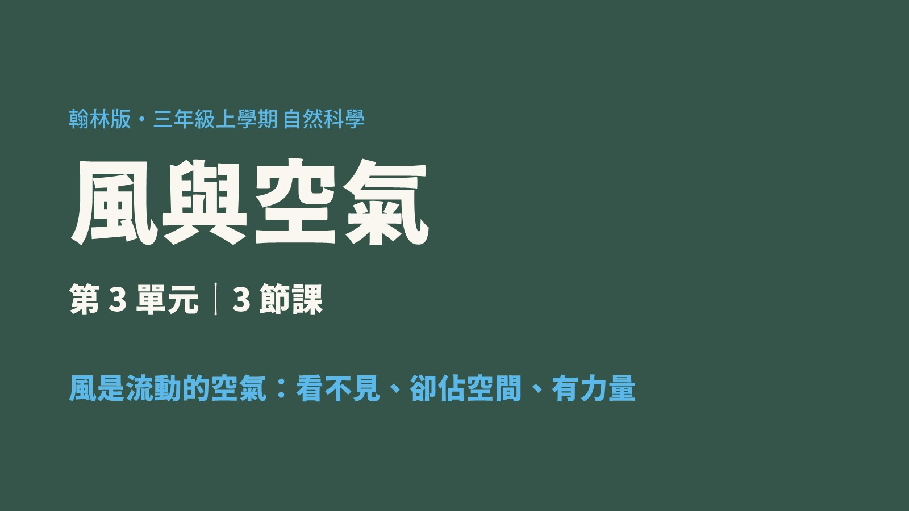

課程地圖
每一節都有一個「動手的任務」和一個「要記住的概念」。點標題可跳到該節的簡報頁。
互動實驗室
上台前先玩一次，隔天實體實驗會更有感覺。三個小活動都對應課堂上的實驗。
旗子往哪邊飄，風就是從「反方向」吹來的。看旗子飄向，判斷風從哪邊來。
杯裡有空氣，倒扣壓進水裡，水就進不去。
拖動滑桿改變風速，看看紙片晃動的變化。
教學簡報
現場投影用簡報檔；這裡是同一份內容的網頁版，可翻頁、可用鍵盤左右鍵。第 5、11 頁是會動的動畫。

課堂測驗
每題選一個答案，選完會告訴你對錯和原因。做完看總分。聽不懂題目時，按「🔊 念題目」就會念給你聽。
參考影片
5 部國小三年級可看的風與空氣影片，點縮圖到 YouTube 播放。
教學工具
抽籤用座號 1～30，抽過不重複；計時器預設 3 分鐘。
兩人對戰
同一題目兩人同時看到，先答對得 1 分。10 題結束結算，可再戰。
載入中…若畫面一直空白，請確認網路連線，或改用教室區網版。
素材圖庫
依課本三小節分成三組（風向風力／空氣特性／風的應用）。點圖可放大，簡報與學習單都用這批圖。
下載
要列印、要修改都可以直接用。